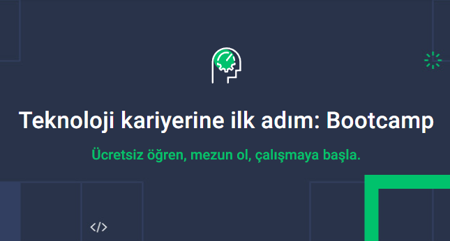

<!DOCTYPE HTML>

<html>
	<head>
		<title>Junior Data Analyst/title>
		<meta charset="utf-8" />
		<meta name="viewport" content="width=device-width, initial-scale=1, user-scalable=no" />
		<link rel="stylesheet" href="assets/css/main.css" />
		<noscript><link rel="stylesheet" href="assets/css/noscript.css" /></noscript>
	</head>
	<body class="is-preload">

		<!-- Sidebar -->
			<section id="sidebar">
				<div class="inner">
					<nav>
						<ul>
							<li><a href="#intro">Welcome</a></li>
							<li><a href="#one">Projects</a></li>
							<li><a href="#three">Get in touch</a></li>
						</ul>
					</nav>
				</div>
			</section>

		<!-- Wrapper -->
			<div id="wrapper">

				<!-- Intro -->
					<section id="intro" class="wrapper style1 fullscreen fade-up">
						<div class="inner">
							<h1 >Junior Data Analyst Furkan Kurşun</h1>
							<p > Hello, I'm Furkan Kurşun. I graduated from the mathematics department of Ege University.
								 I have more than 1.5 years of experience in mathematics teaching.
								  I decided to continue my career in data analysis and have been working towards this goal for the past year.
								   I have always had a passion for understanding, contextualizing, and interpreting data.
								    I see data not just as numbers, but also as stories and I strive to tell these stories accurately. 
									Working with data is my passion and my purpose is to use it to create a better world. I share my work on data analysis here. Welcome friends
								 </p>
							<ul class="actions">
								<li><a href="https://github.com/Furkankursun" class="button scrolly" target=”_blank”>Learn more</a></li>
							</ul>
						</div>
					</section>

				<!-- One -->
				    <!-- section start Techcareer Bootcamp -->
					<section id="one" class="wrapper style2 spotlights">
						<section>
							<a href="#" class="image"></a>
							<div class="content">
								<div class="inner">
									<h2>Techcareer Bootcamp</h2>
									<p>My final project was to predict whether there are people in an office room using machine learning.
										 After preparing and processing the data using Python. I used Random Forest and Gradient Boosting algorithms.</p>
									<ul class="actions">
										<li><a href="https://github.com/Furkankursun/Techcareer-Bootcamp" target=”_blank” class="button">Learn more</a></li>
									</ul>
								</div>
							</div>
						</section>
						 <!-- section end -->
						<!-- section start Busıness Intellıgence Project -->	
						<section>
							<a href="#" class="image"></a>
							<div class="content">
								<div class="inner">
									<h2>Business Intelligence Project</h2>
									<p>A business intelligence project sent by a company.
										I analyzed the data with python and made a dashboard with tableua.
										I wrote my conclusions in the project summary.</p>
									<ul class="actions">
										<li><a href="https://github.com/Furkankursun/Business-Intelligence-Project"  target=”_blank” class="button">Learn more</a></li>
									</ul>
								</div>
							</div>
						</section>
 						<!-- section end -->

						<!-- section start -->
						<section>
							<a href="#" class="image"></a>
							<div class="content">
								<div class="inner">
									<h2>Customer Shopping EDA</h2>
									<p>In this project, we examined the sales data of shopping centers in Istanbul.
										I developed it using the Python environment, visualized the data and finally wrote my conclusions.I found few patterns. 
										Since the data was synthetic, we cannot take action based on the data.</p>
									<ul class="actions">
										<li><a href="https://github.com/Furkankursun/Customer-Shopping-Eda" target=”_blank” class="button">Learn more</a></li>
									</ul>
								</div>
							</div>
						</section>
						<!-- section end -->
						
					</section>

				

				<!-- Three -->
					<section id="three" class="wrapper style1 fade-up">
						<div class="inner">
							<h2 style="color:rgb(12, 10, 10)";>Get in touch</h2>
							<p style="color:rgb(12, 10, 10)"; >Please comments me your feedbacks to help me improve myself.
								I want to be a data analyst. I'm open to any kind of offer. (volunteer, internship, part-time, full-time)
								</p>
							<div class="split style1">
								<section>
									<form method="post" action="#">
										<div class="fields">
											<div class="field half">
												<label for="name">Name</label>
												<input type="text" name="name" id="name" />
											</div>
											<div class="field half">
												<label for="email">Email</label>
												<input type="text" name="email" id="email" />
											</div>
											<div class="field">
												<label for="message">Message</label>
												<textarea name="message" id="message" rows="5"></textarea>
											</div>
										</div>
										<ul class="actions">
											<li><a href="" class="button submit">Send Message</a></li>
										</ul>
									</form>
								</section>
								<section>

									<ul class="contact">
										<li>
											<h3>Address</h3>
											<span>İzmir Turkey<br />
											</span>
										</li>
										<li>
											<h3>Email</h3>
											<a href="#">furkanku16@gmail.com</a>
										</li>
										
										<li>
											<h3>Social</h3>
											<ul class="icons">
												<li><a href="https://github.com/Furkankursun" class="icon brands fa-github"><span class="label">GitHub</span></a></li>
												<li><a href="https://www.linkedin.com/in/furkankursun/" class="icon brands fa-linkedin-in"><span class="label">LinkedIn</span></a></li>
											</ul>
										</li>
									</ul>
								</section>
							</div>
						</div>
					</section>

			</div>

		

		<!-- Scripts -->
			<script src="assets/js/jquery.min.js"></script>
			<script src="assets/js/jquery.scrollex.min.js"></script>
			<script src="assets/js/jquery.scrolly.min.js"></script>
			<script src="assets/js/browser.min.js"></script>
			<script src="assets/js/breakpoints.min.js"></script>
			<script src="assets/js/util.js"></script>
			<script src="assets/js/main.js"></script>

	</body>
</html>
